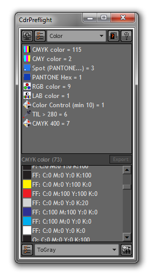

Макрос стал удобней в использовании.
Пожелания для будущих версий:
Из важных.
1. Auto Refrash Info (в виде замочка как дополнение к существующему)
Из неважных.
1. Изменение цвета объектов, на подобее Black Generation, как в Photoshope. (в обе стороны)
Sancho / 06.10.2011, 15:31
Des425, Auto Refrash это конечно хорошо, но к данному макросу это не применительно, т.к. я думаю мало кому понадобится такая функция, которая в неподходящий момент будет блокировать работу что бы проверить документ.
Zivotnoe / 10.10.2011, 15:32/15:37
Бета версия макроса установлена на CorelDRAW X4 (14.0.0.701). Установка макроса проблем не вызвала, все прошло хорошо. После загрузки Corel в меню появился пункт CdrPreflight – в предыдущей версии макроса была кнопка.
Открыв исследуемый файл, запустил макрос. Как уже писал Sancho на сайте, макрос имеет вид докера. Внешний вид его можно посмотреть на скринах на сайте. Окно делится на 2 части. В верхней отображаются группы объектов в документе, в нижней – сами объекты.
После нажатия пункта CdrPreflight докер выскакивает справа. Мне пришлось его немного растянуть, чтобы была видна кнопка Converter. Окно макроса предлагает «Click on the Refresh button for get information about active document». Что было незамедлительно сделано. После нажатия кнопки Refresh Info появляется информация о файле в удобной форме (для тех, кто пользуется предидущей версией макроса эта форма знакома).
Дальнейшая работа велась с установками префлайта и конвертера «по умолчанию». Скин макроса стандартный, для желающих Sancho предлагает еще и черный вариант оформления.
Что бросилось в глаза:
Fountain Fill теперь можно выделить и он покажется списком внизу.
Объект внизу выделяется, он же выделяется в файле. Двойной щелчок на нем этот объект не приближает и не выдает отдельным окном информацию о нем.
В любой активный объект (он показывается черным) можно ткнуть мышью в нижней части макроса – объект выделяется в файле.
При работе конвертера нет отдельного статус бара. Теперь его индикатор работы совпадает с стандартным индикатором работы CorelDRAW при сохранении, открытии файла. После работы конвертера в нижней части докера появляется надпись «Operation is completed!».
Немного статистики:
За несколько дней было обработано макросом порядка 80 файлов разной степени сложности – от листовок А6, 4+4, до многостраничных буклетов и плакатов А2 формата. Из них 61 были с различными проблемами (шрифты не в кривых, пантоны, RGB, заливки и прочая; где-то было больше, где-то меньше). Префлайт отработал хорошо во всех файлах, среди проблемных файлов при запуске конвертера на 3х файлах CorelDRAW X4 «упал».
После работы конвертера никаких сюрпризов в файлы не добавилось.
Впечатления:
Работать с макросом стало удобнее. К изменениям в сравнении с предыдущей версией быстро привыкаешь. Продукт получился качественным, проблем с его использованием не возникло.
Des425 / 10.10.2011, 17:11
Sancho, я имел в виду не заменить на Авто а добавить как дополнение. Как у стандартных фильтров Корла.
Sancho / 10.10.2011, 17:46
Des425, я то как раз понял ))) Ещё раз объясню. Стандартные фильтры блокируют доступ к документу на момент применения/просмотра. Так и префлайт, на момент проверки документа будет его блокировать. Это будет только раздражать.
К тому же у фильтров всё ясно когда запускается авто-применение — когда меняется какой то параметр. А когда по твоему должна запускаться авто-проверка префлайта?
Des425 / 10.10.2011, 18:15
Когда изменяю цвет объекта или другое свойство объекта, но выделив этот объект через СdrPreflight, а не на рабочим столе Корла. Это нужно для того, что бы не нажимать после каждого изменения кнопку Refresh
Sancho / 10.10.2011, 19:04
Des425, это не так просто, а в некоторых случаях просто невозможно. В общем, трудозатраты не соизмеримы с результатом, в данном случае.


дополнительный скин:

Мне серая больше нравится.
Макрос стал удобней в использовании.
Пожелания для будущих версий:
Из важных.
1. Auto Refrash Info (в виде замочка как дополнение к существующему)
Из неважных.
1. Изменение цвета объектов, на подобее Black Generation, как в Photoshope. (в обе стороны)
Des425, Auto Refrash это конечно хорошо, но к данному макросу это не применительно, т.к. я думаю мало кому понадобится такая функция, которая в неподходящий момент будет блокировать работу что бы проверить документ.
Бета версия макроса установлена на CorelDRAW X4 (14.0.0.701). Установка макроса проблем не вызвала, все прошло хорошо. После загрузки Corel в меню появился пункт CdrPreflight – в предыдущей версии макроса была кнопка.
Открыв исследуемый файл, запустил макрос. Как уже писал Sancho на сайте, макрос имеет вид докера. Внешний вид его можно посмотреть на скринах на сайте. Окно делится на 2 части. В верхней отображаются группы объектов в документе, в нижней – сами объекты.
После нажатия пункта CdrPreflight докер выскакивает справа. Мне пришлось его немного растянуть, чтобы была видна кнопка Converter. Окно макроса предлагает «Click on the Refresh button for get information about active document». Что было незамедлительно сделано. После нажатия кнопки Refresh Info появляется информация о файле в удобной форме (для тех, кто пользуется предидущей версией макроса эта форма знакома).
Дальнейшая работа велась с установками префлайта и конвертера «по умолчанию». Скин макроса стандартный, для желающих Sancho предлагает еще и черный вариант оформления.
Что бросилось в глаза:
Fountain Fill теперь можно выделить и он покажется списком внизу.
Объект внизу выделяется, он же выделяется в файле. Двойной щелчок на нем этот объект не приближает и не выдает отдельным окном информацию о нем.
В любой активный объект (он показывается черным) можно ткнуть мышью в нижней части макроса – объект выделяется в файле.
При работе конвертера нет отдельного статус бара. Теперь его индикатор работы совпадает с стандартным индикатором работы CorelDRAW при сохранении, открытии файла. После работы конвертера в нижней части докера появляется надпись «Operation is completed!».
Немного статистики:
За несколько дней было обработано макросом порядка 80 файлов разной степени сложности – от листовок А6, 4+4, до многостраничных буклетов и плакатов А2 формата. Из них 61 были с различными проблемами (шрифты не в кривых, пантоны, RGB, заливки и прочая; где-то было больше, где-то меньше). Префлайт отработал хорошо во всех файлах, среди проблемных файлов при запуске конвертера на 3х файлах CorelDRAW X4 «упал».
После работы конвертера никаких сюрпризов в файлы не добавилось.
Впечатления:
Работать с макросом стало удобнее. К изменениям в сравнении с предыдущей версией быстро привыкаешь. Продукт получился качественным, проблем с его использованием не возникло.
Sancho, я имел в виду не заменить на Авто а добавить как дополнение. Как у стандартных фильтров Корла.
Des425, я то как раз понял ))) Ещё раз объясню. Стандартные фильтры блокируют доступ к документу на момент применения/просмотра. Так и префлайт, на момент проверки документа будет его блокировать. Это будет только раздражать.
К тому же у фильтров всё ясно когда запускается авто-применение — когда меняется какой то параметр. А когда по твоему должна запускаться авто-проверка префлайта?
Когда изменяю цвет объекта или другое свойство объекта, но выделив этот объект через СdrPreflight, а не на рабочим столе Корла. Это нужно для того, что бы не нажимать после каждого изменения кнопку Refresh
Des425, это не так просто, а в некоторых случаях просто невозможно. В общем, трудозатраты не соизмеримы с результатом, в данном случае.
как восстановить настройки по умолчанию
Страницы